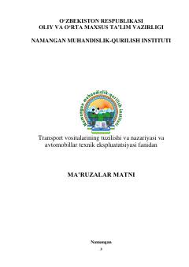

TVTransport vositalari tuzilishi va avtomobillar texnik ekspluatatsiyasi bo'yicha o'quv qo'llanma.
Ushbu ma'ruzalar matni transport vositalarining tuzilishi, nazariyasi va avtomobillarni texnik ekspluatatsiya qilish faniga bag'ishlangan. Unda avtomobillar va dvigatellarning umumiy tuzilishi, mexanizmlari, tizimlari hamda ularga texnik xizmat ko'rsatish va ta'mirlash masalalari atroflicha yoritilgan.